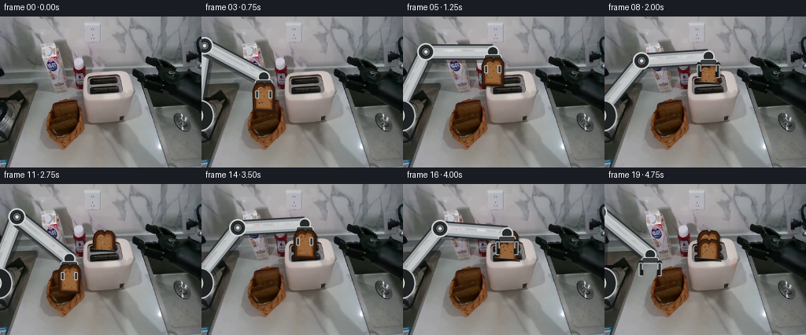
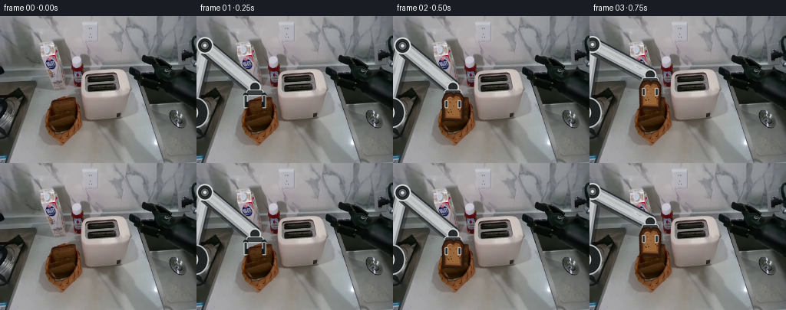

CODING AGENTS AS PIXEL WORLD MODELS
traex/GPT-5.6-Sol · common50_0002
点击播放 · 原生 RGB 像素
逐轮保存的候选
回放视频、检查图与代码变化。
每份候选均可单独播放。实际图片检查记录在下方工具轨迹中。
候选 01播放与检查图
点击播放 · 原生 RGB 像素


展开代码变化
--- 上一保存版本
+++ 本次保存版本
@@ -0,0 +1,243 @@
+#!/usr/bin/env python3
+"""Generate a fixed-camera robotic bread-loading sequence from first_frame.png.
+
+All animation is deterministic and uses only local raster/vector operations. The
+arm is solved as a constant-length two-link mechanism, while each bread slice is
+a rigid sprite. Slot clipping supplies the insertion occlusion.
+"""
+from pathlib import Path
+import math
+import numpy as np
+from PIL import Image, ImageDraw, ImageFilter
+import artifact_io
+
+HERE = Path(__file__).resolve().parent
+W, H = 256, 192
+S = 4 # supersampling for clean, stable geometry
+ANCHOR = (-10.0, 126.0)
+L1, L2 = 90.0, 85.0 # rigid link lengths
+
+
+def smoothstep(t):
+ t = max(0.0, min(1.0, float(t)))
+ return t * t * (3.0 - 2.0 * t)
+
+
+def mix(a, b, t):
+ t = smoothstep(t)
+ return tuple(a[i] + (b[i] - a[i]) * t for i in range(len(a)))
+
+
+def ik(wrist):
+ """Elbow-up inverse kinematics with fixed, physically consistent links."""
+ ax, ay = ANCHOR
+ tx, ty = wrist
+ dx, dy = tx - ax, ty - ay
+ d = math.hypot(dx, dy)
+ # All authored poses are reachable; clamp is only numerical protection.
+ d = min(max(d, abs(L1 - L2) + 1e-5), L1 + L2 - 1e-5)
+ along = (L1 * L1 - L2 * L2 + d * d) / (2.0 * d)
+ height = math.sqrt(max(0.0, L1 * L1 - along * along))
+ ux, uy = dx / d, dy / d
+ # Minus the screen-space perpendicular chooses the upper, unobstructive arc.
+ ex = ax + along * ux + height * uy
+ ey = ay + along * uy - height * ux
+ return (ex, ey)
+
+
+def scpt(p):
+ return (int(round(p[0] * S)), int(round(p[1] * S)))
+
+
+def render_arm(base, wrist, jaw_open):
+ """Render a stable brushed-metal robot arm and parallel-jaw gripper."""
+ elbow = ik(wrist)
+ layer = Image.new("RGBA", (W * S, H * S), (0, 0, 0, 0))
+ d = ImageDraw.Draw(layer)
+ a, e, w = scpt(ANCHOR), scpt(elbow), scpt(wrist)
+
+ # Contact shadows and dark mechanical rims.
+ for p, q in ((a, e), (e, w)):
+ ps = (p[0] + 2*S, p[1] + 3*S)
+ qs = (q[0] + 2*S, q[1] + 3*S)
+ d.line((ps, qs), fill=(12, 15, 16, 92), width=22*S)
+ d.line((p, q), fill=(44, 48, 50, 255), width=20*S)
+ d.line((p, q), fill=(153, 158, 161, 255), width=16*S)
+ d.line((p, q), fill=(195, 199, 201, 255), width=10*S)
+ # Offset highlight remains attached to each rigid link.
+ d.line(((p[0]-2*S, p[1]-2*S), (q[0]-2*S, q[1]-2*S)),
+ fill=(225, 228, 228, 180), width=3*S)
+
+ # Fixed base collar at the left edge and articulated hinge rings.
+ d.ellipse((-19*S, 106*S, 16*S, 146*S), fill=(31, 35, 36, 255),
+ outline=(178, 182, 183, 255), width=2*S)
+ for cx, cy, r in ((ANCHOR[0], ANCHOR[1], 12), (elbow[0], elbow[1], 11)):
+ box=((cx-r)*S,(cy-r)*S,(cx+r)*S,(cy+r)*S)
+ d.ellipse(box, fill=(42, 46, 47, 255), outline=(205, 208, 208, 255), width=2*S)
+ rr=6
+ d.ellipse(((cx-rr)*S,(cy-rr)*S,(cx+rr)*S,(cy+rr)*S),
+ fill=(91, 96, 98, 255), outline=(18,20,21,255), width=S)
+ d.ellipse(((cx-2)*S,(cy-2)*S,(cx+2)*S,(cy+2)*S), fill=(220,222,221,255))
+
+ # Wrist rotator and parallel-jaw gripper. Jaws stay rigid; only separation changes.
+ x, y = wrist
+ d.ellipse(((x-8)*S,(y-8)*S,(x+8)*S,(y+8)*S),
+ fill=(38,42,43,255), outline=(199,202,202,255), width=2*S)
+ d.rounded_rectangle(((x-11)*S,(y+3)*S,(x+11)*S,(y+11)*S), radius=3*S,
+ fill=(58,62,63,255), outline=(207,209,208,255), width=S)
+ sep = 12.0 if jaw_open else 8.5
+ for side in (-1, 1):
+ jx = x + side * sep
+ # small knuckle then a straight, nondeforming jaw
+ d.ellipse(((jx-3)*S,(y+7)*S,(jx+3)*S,(y+13)*S), fill=(31,34,35,255))
+ d.rounded_rectangle(((jx-2.4)*S,(y+10)*S,(jx+2.4)*S,(y+27)*S), radius=1*S,
+ fill=(54,58,59,255), outline=(185,188,188,255), width=S)
+ # Inward gripping pad.
+ px0 = jx - 3.2 if side > 0 else jx + 0.2
+ d.rectangle((px0*S,(y+19)*S,(px0+3)*S,(y+26)*S), fill=(18,20,20,255))
+
+ # Very subtle texture, clipped by existing alpha, to match the source photograph.
+ arr = np.asarray(layer).copy()
+ yy, xx = np.indices(arr.shape[:2])
+ grain = (((xx * 13 + yy * 7) % 17) - 8) // 4
+ mask = arr[..., 3] > 30
+ rgb = arr[..., :3].astype(np.int16)
+ rgb[mask] = np.clip(rgb[mask] + grain[mask, None], 0, 255)
+ arr[..., :3] = rgb.astype(np.uint8)
+ layer = Image.fromarray(arr, "RGBA").resize((W, H), Image.Resampling.LANCZOS)
+ return Image.alpha_composite(base.convert("RGBA"), layer)
+
+
+def make_bread(seed):
+ """Create one rigid brown-bread slice with crust, crumb and baked speckles."""
+ bw, bh = 34*S, 42*S
+ im = Image.new("RGBA", (bw, bh), (0,0,0,0))
+ d = ImageDraw.Draw(im)
+ # Flat lower body and a gently double-domed top silhouette.
+ outer = [(5*S,39*S),(3*S,14*S),(5*S,8*S),(9*S,4*S),(14*S,3*S),
+ (17*S,6*S),(20*S,3*S),(26*S,4*S),(30*S,9*S),(31*S,39*S)]
+ d.polygon(outer, fill=(69,35,16,255))
+ d.line(outer+[outer[0]], fill=(40,22,12,255), width=2*S, joint="curve")
+ inner = [(8*S,36*S),(7*S,14*S),(9*S,10*S),(13*S,8*S),(17*S,10*S),
+ (20*S,7*S),(25*S,8*S),(27*S,12*S),(28*S,36*S)]
+ d.polygon(inner, fill=(131,82,43,255))
+ # Warm center gradient bands suggest brown wholemeal crumb.
+ d.polygon([(10*S,34*S),(9*S,15*S),(13*S,11*S),(17*S,13*S),(21*S,10*S),
+ (25*S,12*S),(26*S,34*S)], fill=(150,101,58,255))
+ rng=np.random.default_rng(seed)
+ for _ in range(24):
+ x=float(rng.uniform(9,27)); y=float(rng.uniform(12,35)); r=float(rng.uniform(.25,.75))*S
+ col=(87,52,29,150) if rng.random()<.7 else (191,143,88,130)
+ d.ellipse((x*S-r,y*S-r,x*S+r,y*S+r), fill=col)
+ d.line([(9*S,13*S),(12*S,9*S),(16*S,11*S)], fill=(203,151,94,125), width=S)
+ # Fixed angle for the entire shot: no shape morphing between poses.
+ return im.rotate(-3.0, resample=Image.Resampling.BICUBIC, expand=True)
+
+
+BREAD = [make_bread(41), make_bread(73)]
+
+
+def paste_bread(base, idx, center, clip_y=None, opacity=255):
+ """Paste a rigid slice; clip_y is toaster-rim occlusion, not deformation."""
+ spr = BREAD[idx].copy()
+ if opacity != 255:
+ ar=np.asarray(spr).copy(); ar[...,3]=(ar[...,3].astype(np.uint16)*opacity//255).astype(np.uint8); spr=Image.fromarray(ar)
+ x = int(round(center[0] - spr.width / (2*S)))
+ y = int(round(center[1] - spr.height / (2*S)))
+ small = spr.resize((spr.width//S, spr.height//S), Image.Resampling.LANCZOS)
+ if clip_y is not None:
+ ar=np.asarray(small).copy()
+ cut=int(round(clip_y-y))
+ if cut < ar.shape[0]: ar[max(0,cut):,:,3]=0
+ small=Image.fromarray(ar,"RGBA")
+ # soft local shadow follows the rigid slice
+ alpha=small.getchannel("A")
+ sh=Image.new("RGBA",small.size,(16,11,7,0)); sh.putalpha(alpha.point(lambda p:p*70//255))
+ base.alpha_composite(sh,(x+2,y+2))
+ base.alpha_composite(small,(x,y))
+ return base
+
+
+def add_slot_rim(base, slot):
+ """Reassert the dark near lip over an inserted slice to strengthen depth."""
+ ov=Image.new("RGBA",(W*S,H*S),(0,0,0,0)); d=ImageDraw.Draw(ov)
+ if slot == 0:
+ pts=[(116,82),(145,84),(148,87),(118,85)]
+ else:
+ pts=[(116,93),(147,96),(149,99),(118,96)]
+ d.polygon([(x*S,y*S) for x,y in pts], fill=(20,22,21,175))
+ d.line([(x*S,y*S) for x,y in pts[:2]], fill=(103,105,103,180), width=S)
+ ov=ov.resize((W,H),Image.Resampling.LANCZOS)
+ return Image.alpha_composite(base,ov)
+
+
+def pose_for_frame(i):
+ """Return wrist, jaw state, moving slice data for authored 4 fps timing."""
+ # Wrist keyframes (frame: x,y,open). Motions use hand-authored smooth arcs.
+ keys = {
+ 1:(76,93,1), 2:(78,93,0), 3:(79,77,0), 4:(94,61,0),
+ 5:(114,45,0), 6:(131,43,0), 7:(132,52,0), 8:(132,51,1),
+ 9:(105,61,1), 10:(88,95,1), 11:(88,95,0), 12:(91,78,0),
+ 13:(109,60,0), 14:(131,51,0), 15:(132,63,0), 16:(132,63,1),
+ 17:(110,58,1), 18:(80,72,1), 19:(58,90,1)
+ }
+ wrist=keys[i][:2]; opened=bool(keys[i][2])
+ moving=None
+ if 2 <= i <= 7:
+ centers={2:(78,118),3:(79,102),4:(94,86),5:(114,70),6:(131,68),7:(132,77)}
+ moving=(0,centers[i],84 if i==7 else None)
+ elif 11 <= i <= 15:
+ centers={11:(88,120),12:(91,103),13:(109,85),14:(131,76),15:(132,88)}
+ moving=(1,centers[i],95 if i==15 else None)
+ return wrist, opened, moving
+
+
+def indicator(base, strength):
+ """Small warm toaster status lamp after both slices are seated."""
+ if strength <= 0:return base
+ ov=Image.new("RGBA",(W*S,H*S),(0,0,0,0)); d=ImageDraw.Draw(ov)
+ a=int(210*strength)
+ d.ellipse((163*S,102*S,167*S,106*S),fill=(244,115,31,a))
+ d.ellipse((161*S,100*S,169*S,108*S),fill=(244,95,20,int(35*strength)))
+ return Image.alpha_composite(base,ov.resize((W,H),Image.Resampling.LANCZOS))
+
+
+def generate():
+ source=Image.open(HERE/"first_frame.png").convert("RGB")
+ frames=[np.asarray(source).copy()] # contract: frame 00 is pixel-identical
+ for i in range(1,20):
+ canvas=source.convert("RGBA")
+ # Completed bread remains in its own physical slot.
+ if i >= 8:
+ canvas=paste_bread(canvas,0,(132,77),clip_y=84)
+ canvas=add_slot_rim(canvas,0)
+ if i >= 16:
+ canvas=paste_bread(canvas,1,(132,88),clip_y=95)
+ canvas=add_slot_rim(canvas,1)
+
+ wrist, opened, moving=pose_for_frame(i)
+ # Arm behind bread; jaws are redrawn over bread below for correct grasp layering.
+ canvas=render_arm(canvas,wrist,opened)
+ if moving is not None:
+ idx,center,clip=moving
+ canvas=paste_bread(canvas,idx,center,clip_y=clip)
+ if clip is not None: canvas=add_slot_rim(canvas,idx)
+ # A compact foreground jaw overlay keeps the grasp readable.
+ ov=Image.new("RGBA",(W*S,H*S),(0,0,0,0)); d=ImageDraw.Draw(ov)
+ x,y=wrist; sep=8.5
+ for side in (-1,1):
+ jx=x+side*sep
+ d.rounded_rectangle(((jx-2.2)*S,(y+17)*S,(jx+2.2)*S,(y+27)*S),
+ radius=S,fill=(47,51,52,255),outline=(188,190,190,255),width=S)
+ canvas=Image.alpha_composite(canvas,ov.resize((W,H),Image.Resampling.LANCZOS))
+ if i >= 16:
+ canvas=indicator(canvas,smoothstep((i-16)/3))
+ frames.append(np.asarray(canvas.convert("RGB"),dtype=np.uint8))
+ frames=np.stack(frames,axis=0)
+ assert frames.shape==(20,192,256,3) and frames.dtype==np.uint8
+ assert np.array_equal(frames[0],np.asarray(source)), "first frame changed"
+ artifact_io.save(frames,HERE)
+ return frames
+
+if __name__ == "__main__":
+ generate()
候选 02播放与检查图
点击播放 · 原生 RGB 像素

展开代码变化
--- 上一保存版本
+++ 本次保存版本
@@ -104,7 +104,7 @@
rgb = arr[..., :3].astype(np.int16)
rgb[mask] = np.clip(rgb[mask] + grain[mask, None], 0, 255)
arr[..., :3] = rgb.astype(np.uint8)
- layer = Image.fromarray(arr, "RGBA").resize((W, H), Image.Resampling.LANCZOS)
+ layer = Image.fromarray(arr).resize((W, H), Image.Resampling.LANCZOS)
return Image.alpha_composite(base.convert("RGBA"), layer)
@@ -149,7 +149,7 @@
ar=np.asarray(small).copy()
cut=int(round(clip_y-y))
if cut < ar.shape[0]: ar[max(0,cut):,:,3]=0
- small=Image.fromarray(ar,"RGBA")
+ small=Image.fromarray(ar)
# soft local shadow follows the rigid slice
alpha=small.getchannel("A")
sh=Image.new("RGBA",small.size,(16,11,7,0)); sh.putalpha(alpha.point(lambda p:p*70//255))
可观测工具轨迹
实际执行的命令与返回图片。
命令 1exit 0
/bin/bash -lc "cat GENERATION_RULES.md && printf '\\n--- PROMPT ---\\n' && cat prompt.txt"
命令 2exit 0
/bin/bash -lc "find . -maxdepth 2 -type f -printf '%p\\n' | sort && printf '\\n--- TOOLS ---\\n' && command -v ffmpeg || true && command -v python3 || true && python3 - <<'PY'
from PIL import Image
im=Image.open('first_frame.png')
print('first_frame:', im.mode, im.size)
PY"命令 3exit 0
/bin/bash -lc 'cat task_spec.json'
命令 4exit 0
/bin/bash -lc "sed -n '1,240p' artifact_io.py"
命令 5exit 0
/bin/bash -lc "python3 - <<'PY'
from PIL import Image
import numpy as np
im=np.asarray(Image.open('first_frame.png')).astype(float)
print('shape/min/max/mean/std',im.shape,im.min((0,1)),im.max((0,1)),im.mean((0,1)),im.std((0,1)))
# sample grid means 16x12 blocks
chars=' .,:;irsXA253hMHGS#9B&@'
g=im.mean(2)
for by in range(12):
s=''
for bx in range(16):
v=g[by*16:(by+1)*16,bx*16:(bx+1)*16].mean()
s += chars[min(len(chars)-1,int(v/256*len(chars)))]
print(s)
# kmeans colors
from sklearn.cluster import MiniBatchKMeans
p=im.reshape(-1,3)
k=MiniBatchKMeans(16,random_state=0,n_init=4,batch_size=4096).fit(p)
for c,n in sorted(zip(k.cluster_centers_,np.bincount(k.labels_)),key=lambda z:-z[1]): print(n, np.rint(c).astype(int))
PY"命令 6exit 2
/bin/bash -lc "cat > /tmp/analyze.py <<'PY'
from PIL import Image
import numpy as np
from sklearn.cluster import KMeans
im=np.array(Image.open('first_frame.png'))
# spatial+color kmeans only color, labels 12
p=im.reshape(-1,3)
km=KMeans(18,random_state=3,n_init=5).fit(p[::3])
lab=km.predict(p).reshape(192,256)
cent=km.cluster_centers_
# order by luminance and assign
order=np.argsort(cent.mean(1)); chars='0123456789ABCDEFGH'
mp={v:chars[i] for i,v in enumerate(order)}
print('CENTERS ordered:')
for i,v in enumerate(order):print(chars[i],np.round(cent[v]).astype(int))
print('\\nMAP 4x4 mode:')
for y in range(0,192,4):
s=''
for x in range(0,256,4):
z=lab[y:y+4,x:x+4]; q=np.bincount(z.ravel()).argmax();s+=mp[q]
print(s)
# Sobel edge downsample
try:
import cv2
gray=cv2.cvtColor(im,cv2.COLOR_RGB2GRAY)
e=cv2.Canny(gray,60,140)
print('\\nEDGES 4x4:')
for y in range(0,192,4):
print(''.join('#' if e[y:y+4,x:x+4].sum()>765 else '+' if e[y:y+4,x:x+4].sum()>255 else ' ' for x in range(0,256,4)))
except Exception as ex: print(ex)
PY
python3 /tmp/analyze.py"命令 7exit 0
/bin/bash -lc "cat > .tmp/analyze.py <<'PY'
from PIL import Image
import numpy as np
from sklearn.cluster import KMeans
im=np.array(Image.open('first_frame.png'))
p=im.reshape(-1,3)
km=KMeans(18,random_state=3,n_init=5).fit(p[::3])
lab=km.predict(p).reshape(192,256)
cent=km.cluster_centers_
order=np.argsort(cent.mean(1)); chars='0123456789ABCDEFGH'
mp={v:chars[i] for i,v in enumerate(order)}
print('CENTERS ordered:')
for i,v in enumerate(order):print(chars[i],np.round(cent[v]).astype(int))
print('\\nMAP 4x4 mode:')
for y in range(0,192,4):
s=''
for x in range(0,256,4):
z=lab[y:y+4,x:x+4]; q=np.bincount(z.ravel()).argmax();s+=mp[q]
print(s)
import cv2
gray=cv2.cvtColor(im,cv2.COLOR_RGB2GRAY)
e=cv2.Canny(gray,60,140)
print('\\nEDGES 4x4:')
for y in range(0,192,4):
print(''.join('#' if e[y:y+4,x:x+4].sum()>765 else '+' if e[y:y+4,x:x+4].sum()>255 else ' ' for x in range(0,256,4)))
PY
python3 .tmp/analyze.py"命令 8exit 0
/bin/bash -lc "python3 - <<'PY'
from PIL import Image
import numpy as np, cv2
im=np.array(Image.open('first_frame.png'))
R,G,B=im.transpose(2,0,1)
for name,m in {
'brown':(R>45)&(R>G*1.25)&(G>B*1.18),
'dark':(R<45)&(G<45)&(B<45),
'white':(R>170)&(G>165)&(B>165),
'neutral_mid':(np.max(im,2)-np.min(im,2)<8)&(R>70)&(R<180)
}.items():
n,lab,stats,cents=cv2.connectedComponentsWithStats(m.astype('uint8'),8)
print('\\n',name,'total',m.sum())
inds=sorted(range(1,n),key=lambda i:stats[i,4],reverse=True)[:30]
for i in inds:
x,y,w,h,a=stats[i];
if a>=5: print(a,(x,y,w,h),np.round(cents[i],1))
PY"命令 9exit 0
/bin/bash -lc "python3 - <<'PY'
from PIL import Image
import numpy as np
im=np.array(Image.open('first_frame.png'))
# custom color classes
R,G,B=im.transpose(2,0,1)
def cls(a):
r,g,b=a
if max(a)<35:return '@'
if max(a)<60:return '#'
if r>1.3*g and g>1.2*b:return 'b' # strong brown
if r>1.15*g and g>1.08*b:return 't' # tan
d=max(a)-min(a)
v=sum(a)/3
if v>190:return 'W'
if v>170:return 'w'
if v>150:return 'O'
if v>130:return 'o'
if v>110:return '-'
if v>90:return ':'
if v>70:return '.'
return ','
for box,name in [((40,90,120,180),'BASKET'),((95,55,180,120),'TOASTER'),((0,0,180,100),'ARM'),((165,35,256,150),'RIGHT')]:
x0,y0,x1,y1=box;print('\\n',name,box)
print(' '+''.join(str((x//10)%10) for x in range(x0,x1,2)))
print(' '+''.join(str(x%10) for x in range(x0,x1,2)))
for y in range(y0,y1,2):
s=''
for x in range(x0,x1,2):
z=im[y:y+2,x:x+2].reshape(-1,3).mean(0);s+=cls(z)
print(f'{y:3}',s)
PY"命令 10exit 0
/bin/bash -lc "python3 - <<'PY'
import cv2,numpy as np
from PIL import Image
im=np.array(Image.open('first_frame.png'))
g=cv2.cvtColor(im,cv2.COLOR_RGB2GRAY)
for y in range(100,171,5):
print(y,end=' ')
for x in range(55,111,5):
p=im[y:y+5,x:x+5]; m=p.mean((0,1)); v=cv2.Laplacian(cv2.cvtColor(p,cv2.COLOR_RGB2GRAY),cv2.CV_32F).var()
# print luminance and brown marker
c='B' if m[0]>m[1]*1.3 and m[1]>m[2]*1.15 else 't' if m[0]>m[1]*1.12 else 'n'
print(f'{int(m.mean()):02x}{c}{min(9,int(v/500))}',end=' ')
print()
PY"命令 11exit 0
/bin/bash -lc "cat > generate.py <<'PY'
#"'!/usr/bin/env python3
"""Generate a fixed-camera robotic bread-loading sequence from first_frame.png.
All animation is deterministic and uses only local raster/vector operations. The
arm is solved as a constant-length two-link mechanism, while each bread slice is
a rigid sprite. Slot clipping supplies the insertion occlusion.
"""
from pathlib import Path
import math
import numpy as np
from PIL import Image, ImageDraw, ImageFilter
import artifact_io
HERE = Path(__file__).resolve().parent
W, H = 256, 192
S = 4 # supersampling for clean, stable geometry
ANCHOR = (-10.0, 126.0)
L1, L2 = 90.0, 85.0 # rigid link lengths
def smoothstep(t):
t = max(0.0, min(1.0, float(t)))
return t * t * (3.0 - 2.0 * t)
def mix(a, b, t):
t = smoothstep(t)
return tuple(a[i] + (b[i] - a[i]) * t for i in range(len(a)))
def ik(wrist):
"""Elbow-up inverse kinematics with fixed, physically consistent links."""
ax, ay = ANCHOR
tx, ty = wrist
dx, dy = tx - ax, ty - ay
d = math.hypot(dx, dy)
# All authored poses are reachable; clamp is only numerical protection.
d = min(max(d, abs(L1 - L2) + 1e-5), L1 + L2 - 1e-5)
along = (L1 * L1 - L2 * L2 + d * d) / (2.0 * d)
height = math.sqrt(max(0.0, L1 * L1 - along * along))
ux, uy = dx / d, dy / d
# Minus the screen-space perpendicular chooses the upper, unobstructive arc.
ex = ax + along * ux + height * uy
ey = ay + along * uy - height * ux
return (ex, ey)
def scpt(p):
return (int(round(p[0] * S)), int(round(p[1] * S)))
def render_arm(base, wrist, jaw_open):
"""Render a stable brushed-metal robot arm and parallel-jaw gripper."""
elbow = ik(wrist)
layer = Image.new("RGBA", (W * S, H * S), (0, 0, 0, 0))
d = ImageDraw.Draw(layer)
a, e, w = scpt(ANCHOR), scpt(elbow), scpt(wrist)
# Contact shadows and dark mechanical rims.
for p, q in ((a, e), (e, w)):
ps = (p[0] + 2*S, p[1] + 3*S)
qs = (q[0] + 2*S, q[1] + 3*S)
d.line((ps, qs), fill=(12, 15, 16, 92), width=22*S)
d.line((p, q), fill=(44, 48, 50, 255), width=20*S)
d.line((p, q), fill=(153, 158, 161, 255), width=16*S)
d.line((p, q), fill=(195, 199, 201, 255), width=10*S)
# Offset highlight remains attached to each rigid link.
d.line(((p[0]-2*S, p[1]-2*S), (q[0]-2*S, q[1]-2*S)),
fill=(225, 228, 228, 180), width=3*S)
# Fixed base collar at the left edge and articulated hinge rings.
d.ellipse((-19*S, 106*S, 16*S, 146*S), fill=(31, 35, 36, 255),
outline=(178, 182, 183, 255), width=2*S)
for cx, cy, r in ((ANCHOR[0], ANCHOR[1], 12), (elbow[0], elbow[1], 11)):
box=((cx-r)*S,(cy-r)*S,(cx+r)*S,(cy+r)*S)
d.ellipse(box, fill=(42, 46, 47, 255), outline=(205, 208, 208, 255), width=2*S)
rr=6
d.ellipse(((cx-rr)*S,(cy-rr)*S,(cx+rr)*S,(cy+rr)*S),
fill=(91, 96, 98, 255), outline=(18,20,21,255), width=S)
d.ellipse(((cx-2)*S,(cy-2)*S,(cx+2)*S,(cy+2)*S), fill=(220,222,221,255))
# Wrist rotator and parallel-jaw gripper. Jaws stay rigid; only separation changes.
x, y = wrist
d.ellipse(((x-8)*S,(y-8)*S,(x+8)*S,(y+8)*S),
fill=(38,42,43,255), outline=(199,202,202,255), width=2*S)
d.rounded_rectangle(((x-11)*S,(y+3)*S,(x+11)*S,(y+11)*S), radius=3*S,
fill=(58,62,63,255), outline=(207,209,208,255), width=S)
sep = 12.0 if jaw_open else 8.5
for side in (-1, 1):
jx = x + side * sep
# small knuckle then a straight, nondeforming jaw
d.ellipse(((jx-3)*S,(y+7)*S,(jx+3)*S,(y+13)*S), fill=(31,34,35,255))
d.rounded_rectangle(((jx-2.4)*S,(y+10)*S,(jx+2.4)*S,(y+27)*S), radius=1*S,
fill=(54,58,59,255), outline=(185,188,188,255), width=S)
# Inward gripping pad.
px0 = jx - 3.2 if side > 0 else jx + 0.2
d.rectangle((px0*S,(y+19)*S,(px0+3)*S,(y+26)*S), fill=(18,20,20,255))
# Very subtle texture, clipped by existing alpha, to match the source photograph.
arr = np.asarray(layer).copy()
yy, xx = np.indices(arr.shape[:2])
grain = (((xx * 13 + yy * 7) % 17) - 8) // 4
mask = arr[..., 3] > 30
rgb = arr[..., :3].astype(np.int16)
rgb[mask] = np.clip(rgb[mask] + grain[mask, None], 0, 255)
arr[..., :3] = rgb.astype(np.uint8)
layer = Image.fromarray(arr, "RGBA").resize((W, H), Image.Resampling.LANCZOS)
return Image.alpha_composite(base.convert("RGBA"), layer)
def make_bread(seed):
"""Create one rigid brown-bread slice with crust, crumb and baked speckles."""
bw, bh = 34*S, 42*S
im = Image.new("RGBA", (bw, bh), (0,0,0,0))
d = ImageDraw.Draw(im)
# Flat lower body and a gently double-domed top silhouette.
outer = [(5*S,39*S),(3*S,14*S),(5*S,8*S),(9*S,4*S),(14*S,3*S),
(17*S,6*S),(20*S,3*S),(26*S,4*S),(30*S,9*S),(31*S,39*S)]
d.polygon(outer, fill=(69,35,16,255))
d.line(outer+[outer[0]], fill=(40,22,12,255), width=2*S, joint="curve")
inner = [(8*S,36*S),(7*S,14*S),(9*S,10*S),(13*S,8*S),(17*S,10*S),
(20*S,7*S),(25*S,8*S),(27*S,12*S),(28*S,36*S)]
d.polygon(inner, fill=(131,82,43,255))
# Warm center gradient bands suggest brown wholemeal crumb.
d.polygon([(10*S,34*S),(9*S,15*S),(13*S,11*S),(17*S,13*S),(21*S,10*S),
(25*S,12*S),(26*S,34*S)], fill=(150,101,58,255))
rng=np.random.default_rng(seed)
for _ in range(24):
x=float(rng.uniform(9,27)); y=float(rng.uniform(12,35)); r=float(rng.uniform(.25,.75))*S
col=(87,52,29,150) if rng.random()<.7 else (191,143,88,130)
d.ellipse((x*S-r,y*S-r,x*S+r,y*S+r), fill=col)
d.line([(9*S,13*S),(12*S,9*S),(16*S,11*S)], fill=(203,151,94,125), width=S)
# Fixed angle for the entire shot: no shape morphing between poses.
return im.rotate(-3.0, resample=Image.Resampling.BICUBIC, expand=True)
BREAD = [make_bread(41), make_bread(73)]
def paste_bread(base, idx, center, clip_y=None, opacity=255):
"""Paste a rigid slice; clip_y is toaster-rim occlusion, not deformation."""
spr = BREAD[idx].copy()
if opacity != 255:
ar=np.asarray(spr).copy(); ar[...,3]=(ar[...,3].astype(np.uint16)*opacity//255).astype(np.uint8); spr=Image.fromarray(ar)
x = int(round(center[0] - spr.width / (2*S)))
y = int(round(center[1] - spr.height / (2*S)))
small = spr.resize((spr.width//S, spr.height//S), Image.Resampling.LANCZOS)
if clip_y is not None:
ar=np.asarray(small).copy()
cut=int(round(clip_y-y))
if cut < ar.shape[0]: ar[max(0,cut):,:,3]=0
small=Image.fromarray(ar,"RGBA")
# soft local shadow follows the rigid slice
alpha=small.getchannel("A")
sh=Image.new("RGBA",small.size,(16,11,7,0)); sh.putalpha(alpha.point(lambda p:p*70//255))
base.alpha_composite(sh,(x+2,y+2))
base.alpha_composite(small,(x,y))
return base
def add_slot_rim(base, slot):
"""Reassert the dark near lip over an inserted slice to strengthen depth."""
ov=Image.new("RGBA",(W*S,H*S),(0,0,0,0)); d=ImageDraw.Draw(ov)
if slot == 0:
pts=[(116,82),(145,84),(148,87),(118,85)]
else:
pts=[(116,93),(147,96),(149,99),(118,96)]
d.polygon([(x*S,y*S) for x,y in pts], fill=(20,22,21,175))
d.line([(x*S,y*S) for x,y in pts[:2]], fill=(103,105,103,180), width=S)
ov=ov.resize((W,H),Image.Resampling.LANCZOS)
return Image.alpha_composite(base,ov)
def pose_for_frame(i):
"""Return wrist, jaw state, moving slice data for authored 4 fps timing."""
# Wrist keyframes (frame: x,y,open). Motions use hand-authored smooth arcs.
keys = {
1:(76,93,1), 2:(78,93,0), 3:(79,77,0), 4:(94,61,0),
5:(114,45,0), 6:(131,43,0), 7:(132,52,0), 8:(132,51,1),
9:(105,61,1), 10:(88,95,1), 11:(88,95,0), 12:(91,78,0),
13:(109,60,0), 14:(131,51,0), 15:(132,63,0), 16:(132,63,1),
17:(110,58,1), 18:(80,72,1), 19:(58,90,1)
}
wrist=keys[i][:2]; opened=bool(keys[i][2])
moving=None
if 2 <= i <= 7:
centers={2:(78,118),3:(79,102),4:(94,86),5:(114,70),6:(131,68),7:(132,77)}
moving=(0,centers[i],84 if i==7 else None)
elif 11 <= i <= 15:
centers={11:(88,120),12:(91,103),13:(109,85),14:(131,76),15:(132,88)}
moving=(1,centers[i],95 if i==15 else None)
return wrist, opened, moving
def indicator(base, strength):
"""Small warm toaster status lamp after both slices are seated."""
if strength <= 0:return base
ov=Image.new("RGBA",(W*S,H*S),(0,0,0,0)); d=ImageDraw.Draw(ov)
a=int(210*strength)
d.ellipse((163*S,102*S,167*S,106*S),fill=(244,115,31,a))
d.ellipse((161*S,100*S,169*S,108*S),fill=(244,95,20,int(35*strength)))
return Image.alpha_composite(base,ov.resize((W,H),Image.Resampling.LANCZOS))
def generate():
source=Image.open(HERE/"first_frame.png").convert("RGB")
frames=[np.asarray(source).copy()] # contract: frame 00 is pixel-identical
for i in range(1,20):
canvas=source.convert("RGBA")
# Completed bread remains in its own physical slot.
if i >= 8:
canvas=paste_bread(canvas,0,(132,77),clip_y=84)
canvas=add_slot_rim(canvas,0)
if i >= 16:
canvas=paste_bread(canvas,1,(132,88),clip_y=95)
canvas=add_slot_rim(canvas,1)
wrist, opened, moving=pose_for_frame(i)
# Arm behind bread; jaws are redrawn over bread below for correct grasp layering.
canvas=render_arm(canvas,wrist,opened)
if moving is not None:
idx,center,clip=moving
canvas=paste_bread(canvas,idx,center,clip_y=clip)
if clip is not None: canvas=add_slot_rim(canvas,idx)
# A compact foreground jaw overlay keeps the grasp readable.
ov=Image.new("RGBA",(W*S,H*S),(0,0,0,0)); d=ImageDraw.Draw(ov)
x,y=wrist; sep=8.5
for side in (-1,1):
jx=x+side*sep
d.rounded_rectangle(((jx-2.2)*S,(y+17)*S,(jx+2.2)*S,(y+27)*S),
radius=S,fill=(47,51,52,255),outline=(188,190,190,255),width=S)
canvas=Image.alpha_composite(canvas,ov.resize((W,H),Image.Resampling.LANCZOS))
if i >= 16:
canvas=indicator(canvas,smoothstep((i-16)/3))
frames.append(np.asarray(canvas.convert("RGB"),dtype=np.uint8))
frames=np.stack(frames,axis=0)
assert frames.shape==(20,192,256,3) and frames.dtype==np.uint8
assert np.array_equal(frames[0],np.asarray(source)), "first frame changed"
artifact_io.save(frames,HERE)
return frames
if __name__ == "__main__":
generate()
PY
python3 generate.py
python3 - <<'"'PY'
from pathlib import Path
from PIL import Image
import numpy as np
z=np.load('pixels.npz')['pixels']
orig=np.asarray(Image.open('first_frame.png'))
first=np.stack([(z[:,:,0]>>16)&255,(z[:,:,0]>>8)&255,z[:,:,0]&255],axis=-1).astype('uint8')
print('pixels',z.shape,z.dtype,'first identical',np.array_equal(first,orig))
print('outputs',[(p.name,p.stat().st_size) for p in map(Path,['pixels.npz','index.html','inspection.png','transition_check.png'])])
# per-frame changed pixel counts, frame differences, and bounding boxes
frames=[]
for i in range(20): frames.append(np.asarray(Image.open(f'frames/{i:02d}.png')))
frames=np.array(frames)
for i in range(20):
m=np.any(frames[i]"'!=orig,2); ys,xs=np.where(m)
d=np.mean(np.abs(frames[i].astype(float)-frames[i-1].astype(float))) if i else 0
print(f'"'{i:02d} changed={m.sum():5d} bbox={None if not m.any() else (xs.min(),ys.min(),xs.max(),ys.max())} mean_delta={d:.2f}')
PY"命令 12exit 130
/bin/bash -lc "python3 - <<'PY' import generate, math prev=None for i in range(1,20): w,o,m=generate.pose_for_frame(i); e=generate.ik(w) a=generate.ANCHOR le=math.dist(a,e); lw=math.dist(e,w) th1=math.degrees(math.atan2(e[1]-a[1],e[0]-a[0])); th2=math.degrees(math.atan2(w[1]-e[1],w[0]-e[0])) print(i,'w',w,'e',tuple(round(x,1) for x in e),'lengths',round(le,2),round(lw,2),'angles',round(th1,1),round(th2,1),'jaw',o) PY"
命令 13exit 0
/bin/bash -lc 'ps -eo pid,stat,etime,cmd | tail -30'
命令 14exit 0
/bin/bash -lc 'du -ah . | sort -h | tail -20 && find frames -type f | wc -l'
命令 15exit 0
/bin/bash -lc 'python3 -m py_compile generate.py artifact_io.py && git status --short'
命令 16exit 0
/bin/bash -lc "python3 generate.py >/dev/null && python3 - <<'PY'
from pathlib import Path
from PIL import Image
import numpy as np
p=Path('.')
fs=sorted((p/'frames').glob('*.png'))
assert len(fs)==20
arr=np.stack([np.asarray(Image.open(f).convert('RGB')) for f in fs])
assert arr.shape==(20,192,256,3) and arr.dtype==np.uint8
assert np.array_equal(arr[0],np.asarray(Image.open('first_frame.png').convert('RGB')))
z=np.load('pixels.npz')['pixels']
assert z.shape==(192,256,20) and z.dtype==np.uint32
repacked=((arr[...,0].astype(np.uint32)<<16)|(arr[...,1].astype(np.uint32)<<8)|arr[...,2]).transpose(1,2,0)
assert np.array_equal(z,repacked)
A=(-10.,126.); L1=90.; L2=85.
keys=[(76,93),(78,93),(79,77),(94,61),(114,45),(131,43),(132,52),(132,51),(105,61),(88,95),(88,95),(91,78),(109,60),(131,51),(132,63),(132,63),(110,58),(80,72),(58,90)]
for tx,ty in keys:
dx,dy=tx-A[0],ty-A[1]; dist=(dx*dx+dy*dy)**.5
q=(L1*L1-L2*L2+dist*dist)/(2*dist); h=max(0,L1*L1-q*q)**.5
ux,uy=dx/dist,dy/dist; ex=A[0]+q*ux+h*uy; ey=A[1]+q*uy-h*ux
assert abs(((ex-A[0])**2+(ey-A[1])**2)**.5-L1)<1e-6
assert abs(((tx-ex)**2+(ty-ey)**2)**.5-L2)<1e-6
print('validated: 20 RGB frames; exact first frame; packed artifact exact; rigid links 90/85 px')
PY"命令 17exit 0
/bin/bash -lc "python3 generate.py >/dev/null && python3 - <<'PY'
from PIL import Image
import numpy as np
frames=np.stack([np.asarray(Image.open(f'frames/{i:02d}.png')) for i in range(20)])
assert frames.shape==(20,192,256,3) and frames.dtype==np.uint8
assert np.array_equal(frames[0],np.asarray(Image.open('first_frame.png')))
print('final regeneration OK')
PY"保存候选 2 份；完成命令 17 次；可验证图片返回 0 张。原始 API 响应与完整日志保留在本地。